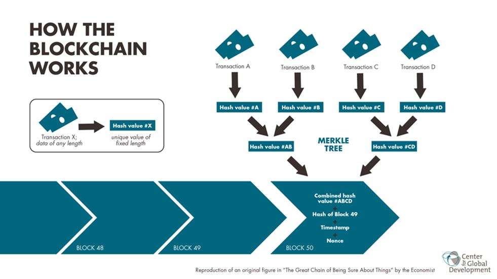

La domination du fait politique par les principaux détenteurs des capitaux s’analyse en réalité en la domination du fait politique par le fait économique. Ce faisant, il apparaît que le « fait politique », qui consiste à organiser la vie en commun dans une société donnée, n’existe plus réellement car il est soumis aux intérêts privés de quelques personnes qui dominent l’édifice institutionnel à la fois au niveau des États et, plus grave encore, au niveau international.
L’évolution de la domination du fait économique sur le fait politique est une longue histoire qui a commencé au moment des Grandes Découvertes et qui se terminera par l’avènement d’un gouvernement mondial aux mains des principaux détenteurs de capitaux de la planète. Ces détenteurs de capitaux ont développé leur emprise politique au moyen de l’accaparement des biens et des capitaux. Ils ont utilisé différents moyens pour arriver à leurs fins politiques parmi lesquels :
la centralisation de la gestion des masses monétaire dans leurs mains, au moyen du système des banques centrales, 1
l’anonymat juridique des capitaux,
le système commercial mondial de libre-échange à la façon OMC qui s’analyse en un libre investissement des multinationales allié à la liberté pour les grandes entreprises d’absorber les entreprises de taille inférieure et in fine les États eux-mêmes.
Ce constat, d’ordre politique, juridique et institutionnel, est évidemment, et même plus que tout autre, encore d’actualité. Nous assistons aujourd’hui à un double mouvement initié par les grands banquiers internationaux visant à durcir leur domination politique, en imposant une monnaie mondiale sous forme dématérialisée, dans le même temps qu’ils accroîtront encore le niveau général de leur accaparement des richesses.
I) ANALYSE DE LA STRATÉGIE MONÉTAIRE DE TYPE CLASSIQUE
Cette stratégie est visible lorsque l’on observe les évolutions monétaires actuelles avec une certaine prise de distance par rapport aux évènements conjoncturels et lorsque l’on garde à l’esprit la méthodologie suivie, de tout temps, par les banquiers accapareurs. Il faut en effet garder en mémoire que les grandes avancées politiques de la caste des banquiers commerçants ont toujours été de pair avec une nette poussée du degré de leur accaparement sur les richesses. Les principaux moyens utilisés, de tout temps, par les banquiers accapareurs pour accroître leur niveau de richesses ont été :
- l’organisation de bulles spéculatives sur les actifs suivie de l’organisation consciencieuse de l’explosion de ces bulles (via le contrôle des taux directeurs de crédit), le tout leur permettant de racheter les actifs dépréciés pour un centime symbolique ;
- le fait de propager des informations fausses ou fallacieuses destinées à orienter la masse des investisseurs dans un sens ou dans un autre pour ensuite prendre le contre-pied desdits investisseurs et rafler la mise…
Par ailleurs, depuis le XXème siècle, les banquiers commerçants accapareurs ont soit financé la création, soit se sont appropriées des technologies ou des méthodes techniques (notamment financières comme par exemple les CDS) nouvelles pour réaliser leurs objectifs de contrôle politique. Ce qui est vrai dans le domaine industriel ou de l’énergie, l’est bien évidemment également dans le domaine financier et monétaire. C’est ainsi que l’on a vu apparaître assez récemment (dernier quart du XXème siècle) deux armes de destruction massive des entreprises et des États que sont la « titrisation » des créances et les « Credit Default Swap »2; étant précisé que des CDS, généralement inscrits en hors bilan, se transforment inéluctablement, pour l’entreprise financière qui les a émis, en « dépôt de bilan ». L’opération a pour effet d’appauvrir les actionnaires, les utilisateurs de cet établissement financier et les ressortissants de l’État appelé au secours financier dudit établissement pour finalement réaliser une concentration supplémentaire du secteur financier puisque l’établissement malade sera racheté ou repris pour un centime symbolique par un plus gros qui se donnera le rôle de « sauveur ».
Toutes ces manœuvres se réalisent sur fond 1) de circulation totale et radicale des capitaux et surtout 2) de leur anonymisation dans des proportions industrielles par le biais du développement très important des « paradis fiscaux ».
II) ANALYSE DE LA STRATÉGIE MONÉTAIRE DE TYPE BLOCKCHAIN
A) Rappel historique
Venons-en à la problématique des crypto-monnaies selon la technique dite des blockchains. Ces monnaies sont apparues, comme chacun le sait maintenant en 2009 de façon anonyme3 à la suite, bien entendu, de la crise financière de 2007. La blockchain est une technique cryptographique de transmission de données qui a été utilisée comme monnaie. Les banquiers, qu’ils soient ou non à l’origine de cette technique, ont eu tôt fait de se mettre sur les rangs pour en prendre le contrôle.
B) Fonctionnement du minage blockchain
La monnaie type blockchain est conçue comme une monnaie propriétaire ; elle est gérée par des « mineurs » qui en contrôlent la quantité en circulation. En quelques sortes, les mineurs, représentés par des ordinateurs décentralisés, remplacent la banque centrale, faussement rattachée à un Etat4, dans le contrôle de la masse monétaire en circulation. Lorsque les grandes banques internationales se mettent sur le marché du minage des cryptomonnaies, il est assez naturel de considérer qu’une collusion de banquiers devenus mineurs est possible. La nature de « monnaie propriétaire » des cryptomonnaies est en soi une invitation à l’accaparement de la gestion monétaire par les plus gros détenteurs de capitaux.
S’agissant de la cryptomonnaie blockchain, il faut comprendre que plus il y aura de prétendants au minage de monnaie type blockchains, plus la capacité technique du mineur devra être importante, jusqu’à arriver à des mineurs professionnels détenant un matériel de professionnel5, un simple ordinateur ne suffisant évidemment pas à la tâche. Qui dit grosse capacité technique dit également gros moyens financiers et logistiques pour acquérir cette capacité technique. Nous en arrivons ici à une professionnalisation des utilisateurs/propriétaires de la monnaie blockchain qui bénéficiera évidemment aux plus gros détenteurs de capitaux. Étant donné le coût de l’investissement technique éventuellement nécessaire au minage, il est d’ailleurs prévu la possibilité, pour les mineurs, de former une coopérative de minage au sein de laquelle les revenus seront distribués à part égale entre tous les mineurs membres de ladite coopérative ; chaque gain opéré par chaque membre de la coopérative étant dès lors distribué à tous les membres de cette coopérative.
Il ne faut donc pas être étonné de voir apparaître une énorme propagande bancaire et médiatique pour inciter les particuliers et les entreprises à utiliser des crypto-monnaies. Car en effet plus il y aura de transactions en cryptomonnaies, plus les mineurs devront être professionnalisés et plus les banques pourront accaparer le marché, devenu alors très lucratif, de la gestion des cryptomonnaies.
En plus de la faveur de grandes banques internationales pour les cryptomonnaies6, certaines banques centrales ont d’ores et déjà émis leur propre crypto-monnaie, tandis que le FMI lui-même se prononce en faveur de cette monnaie7.
C) Objectifs géopolitiques des cryptomonnaies
D’un point de vue de géopolitique économique, ce système monétaire nouveau va retirer définitivement aux gouvernements la gestion monétaire pour la confier directement à des entités privées, c’est-à-dire aux accapareurs.
Nous franchissons ici un pas de plus qui va rendre obsolète le système des banques centrales pour mettre la gestion monétaire, non pas dans les mains de ses usagers, mais dans celles des principaux propriétaires de capitaux. Cette volonté implicite pourrait expliquer que certaines banques centrales et dirigeants politiques aient souhaité s’emparer de la technologie des blockchains afin de conserver un contrôle politique sur ces nouvelles monnaies8.
Ce type de tentative a eu un précédent historique très important qui s’est soldé par un échec cuisant : Napoléon Ier avait lui aussi cru doubler les banquiers en prenant le contrôle capitalistique direct de la banque centrale qu’il instituait sur le territoire français. On connait la suite : Napoléon est parti mais la banque centrale a perduré ; qui plus est, les véritables initiateurs de cette idée de « banque centrale », les banquiers, ont fini par en prendre totalement le contrôle. Moralité de l’histoire : un homme politique ne pourra pas contrer les banquiers en utilisant les techniques que ces derniers lui imposent et maîtrisent mieux que personne. Une décision politique conjoncturelle, aussi fûtée apparaisse-t-elle, ne pourra jamais venir à bout des banquiers dans un contexte institutionnel général hostile à la décision politique. Croire retourner les armes de l’adversaire contre lui est une technique sans doute efficace dans certains arts martiaux mais qui n’a, historiquement, jamais fait ses preuves en matière monétaire et financière.
Il est possible que cette compréhension historique fine des évènements ait incité le gouvernement chinois (qui avait, un temps, semblé favorable aux cryptomonnaies) a interdire les plateformes de blockchains sur son territoire9.
D) Moralité politique de l’histoire « blockchains »
La politique ne pourra reprendre le contrôle de la monnaie qu’à la condition d’établir de nouvelles règles monétaires, la première de toutes étant de rendre à la monnaie sa fonction initiale de service, et donc d’institution politique en raison de son utilité publique. Ce qui suppose de mettre un terme à la monnaie conçue comme une marchandise, comme le sont l’or ou les cryptomonnaies actuelles, qui sont des invitations à l’accaparement monétaire. Ce n’est qu’à cette condition que la force politique pourra subvertir la force économique et reprendre la place qui est naturellement, de droit, la sienne dans la gestion des affaires publiques.
III) ANALYSE GÉOPOLITIQUE DE LA STRATÉGIE MONÉTAIRE GLOBALE : UNE VASTE OPÉRATION D’ENCERCLEMENT DES ÉTATS
D’une façon générale, en tant que géopoliticienne de l’économie, nous voyons arriver simultanément deux très grands évènements qui vont participer à la mise en place rapide de la future monnaie mondiale, arme du futur gouvernement mondial aux mains des élites financières.
Le premier grand évènement est classique. Il consiste, pour les banques centrales coordonnées par la BRI, à opérer un dégonflement des bulles spéculatives créées par un afflux massif de monnaie peu chère. L’actuelle tendance lourde à la remontée des taux directeurs va opérer immanquablement, comme elle l’a historiquement toujours fait, un appauvrissement spectaculaire des occidentaux. Le malheur des uns faisant toujours le bonheur des autres, les grands capitalistes vont profiter des prix dépréciés pour racheter à vil prix la grande majorité des actifs en circulation.
Un vaste phénomène d’accaparement est actuellement en cours en occident. Ce phénomène donnera encore plus de puissance internationale aux banquiers commerçants pour ultérieurement circonvenir les gouvernements qui tenteraient, ici ou là, de lui résister. Ce phénomène d’accaparement massif va aggraver la pression sur les gouvernements politiques en créant un environnement qui leur sera définitivement hostile et qui, à terme, permettra la victoire politique totale des banquiers accapareurs.
Le second grand évènement est l’arrivée massive des cryptomonnaies à l’échelle mondiale. Cette arrivée, proclamée en grande pompe par les plus grandes banques et institutions internationales, répond à trois objectifs complémentaires. Premièrement, l’incitation au développement des cryptomonnaies crée les conditions idéales pour développer la spéculation sur ces monnaies ; or l’histoire nous apprend que les seuls gagnants réels des mouvements de spéculation sont les banquiers accapareurs. Il est ici encore question d’accaparement.
Deuxièmement, nous avons vu que le développement de l’utilisation des monnaies blockchains est favorable à la concentration et à la professionnalisation des mineurs, ce phénomène engendrera une arrivée massive des banquiers en tant qu’organes de contrôle de ces monnaies.
Troisièmement, l’arrivée en grande pompe d’une cryptomonnaie a-nationale c’est-à-dire non rattachée à un gouvernement d’État, répond à l’objectif d’habituer les gens à utiliser cette technique de monnaie non rattachée à un État politique. Il sera ainsi plus aisé d’imposer ce type de monnaie en tant que monnaie mondiale.
En résumé, les grandes stratégies bancaires à l’œuvre actuellement ont toutes pour objectif de supprimer définitivement la participation d’organes politiques, quels qu’ils soient, dans le contrôle et la gestion monétaire. Les grands banquiers tendent, avec l’avènement des cryptomonnaie, un piège mortel aux hommes politiques : le piège de l’encerclement, deuxième stratagème des « 36 stratagèmes » de l’art de la guerre chinois.
Le seul moyen pour des dirigeants politiques de reprendre le contrôle de leur monnaie et donc, par voie de conséquence, de leur État est de prendre acte du fait que l’actuelle situation monétaire leur échappe ; quelle que soit par ailleurs la pertinence, de court terme, de telle ou telle mesure conjoncturelle tendant à règlementer les monnaies blockchains. Des dirigeants politiques sages devraient édicter des règles monétaires nouvelles qui excluront, pour l’avenir, les banquiers accapareurs de la gestion monétaire. La première de ces règles serait de replacer la monnaie dans un contexte institutionnel et de lui rendre la place de service public qu’elle n’aurait jamais dû perdre au profit de celle de marchandise.
Partager cette page